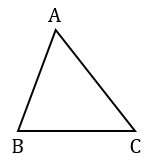
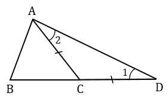

Теорема
Каждая сторона треугольника меньше суммы двух других сторон.
Дано: △АВС.
Доказать: АВ < ВС + АС.
Доказательство:

Сделаем дополнительное построение. Отложим на продолжении стороны ВС отрезок СD, равный стороне АС.

По построению СD = АС, следовательно, △АСD - равнобедренный с основанием АD, тогда ∠1 = ∠2 (углы при основании), при этом в △ АВD ∠ВАD > ∠2, следовательно, ∠ ВАD> ∠1.
В треугольнике против большего угла лежит большая сторона, значит, АВ<ВD. При этом ВD = ВС + СD, а учитывая то, что по построению СD = АС получим, ВD = ВС + АС, поэтому АВ<ВС + АС. Теорема доказана.
Для любых трех точек А, В и С, не лежащих на одной прямой, справедливы неравенства: АВ<АС+СВ, АС<АВ+ВС, ВС<ВА+АС
Каждое из неравенств АВ<АС+СВ, АС<АВ+ВС, ВС<ВА+АС, называется неравенством треугольника.